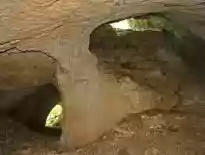

SRBIJA

Bogovinska pećina nalazi se u istočnoj Srbiji, na jugoistočnom obodu masiva Južnog Kučaja, koji je deo velikog regionalnog Kučajskog-beljaničkog masiva.
Smeštena je na teritoriji Opštine Boljevac i u ataru sela Bogovina, koje se nalazi pored puta Boljevac-Zaječar.
Ulaz u pećinu nalazi se na 360 m nadmorske visine. Jedna je od najdužih pećina u Srbiji, a dužina istraženih kanala je oko 6 km. Bogovinska pećina je,
po morfologiji, horizontalni podzemni oblik karstnog reljefa sa kanalima u tri etaže. Veliki deo kanala Bogovinske pećine reprezentativni su primeri
erozivnih kanala. Donja etaža, Ponorski kanal, ima stalni tok. Gornja etaža, Visoki kanal je suv. Srednja etaža, Glavni kanal, koji čini najveći deo
pećine, povremeno je hidrološki aktivan. Razlog tome je činjenica da kroz pećinu teče povremeni tok koji ističe na ulazu. To pećini daje karaket rečne
izvorske pećine, odnosno pećina predstavlja povremeno vrelo.
Dublji delovi pećine obiluju pećinskim nakitom.
U Bogovinskoj pećini živi veoma interesantna fauna kavernikolnih zglavkara. Po značaju se izdvaja pseudoškorpija, kopneni endemski račić i
suptroglofilni insekt.